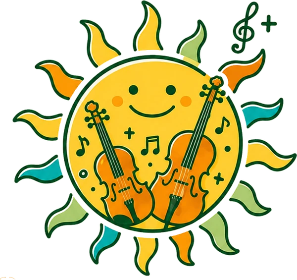
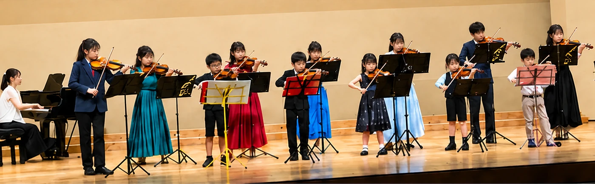
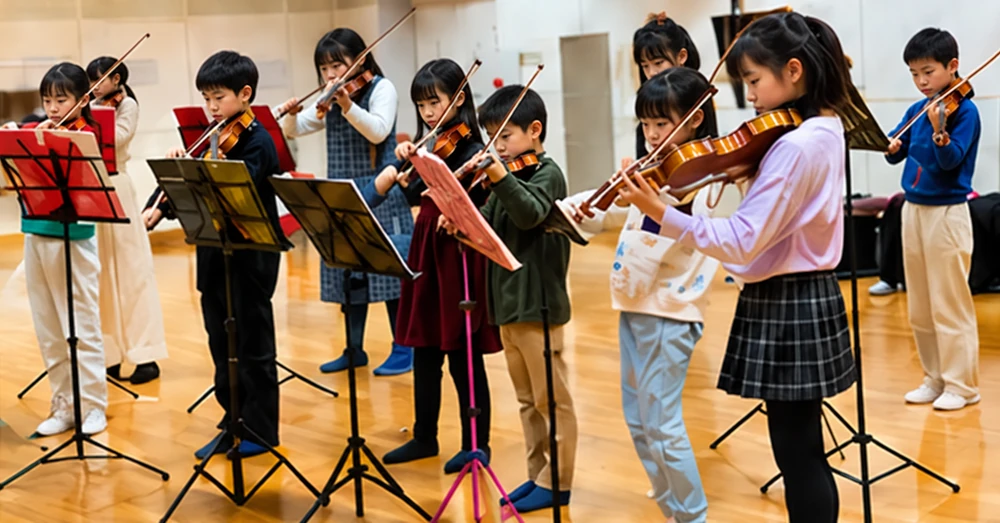
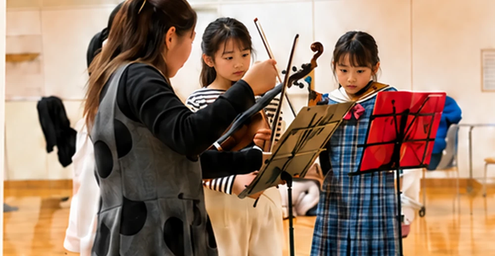

山口県下松市を拠点に活動する、子どものための弦楽合奏団です。
バイオリンなどの弦楽器に初めて触れる子も、もっと上手くなりたい子も、
それぞれのペースで音楽と出会えます。
ルーチェ（Luce）は、イタリア語で「光」を意味します。
弦楽器の響きが、子どもたちの心に小さな光を灯し、その光が地域の文化を照らしていく——。
ここは、楽器に初めて触れる子も、もっと上手くなりたい子も、それぞれのペースで音楽と出会える場所です。
音楽の基礎から
アンサンブルまで、
楽しみながら学べます。
みんなで音を合わせる
喜びを感じながら、
大切な仲間ができます。
小さな成功を重ねながら、
次の一歩へ進めます。



♪ 発表会や毎週の練習で、音楽の楽しさを体験しています ♪
エリザベト音楽大学 音楽学部 器楽学科卒業。日本弦楽指導協会会員。
長年にわたり弦楽器の指導に携わり、子どもたち一人ひとりの個性を活かしたレッスンを行っています。
下記のLINE・Instagramより
お気軽にご連絡ください。
実際の活動を
見学・体験いただけます。
入会申込書を
ご記入・ご提出ください。
仲間と一緒に
音楽を始めましょう。